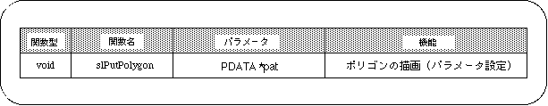

Return to previous page | Return to menu | Go to next page
When viewing polygons, distortion problems can occur.
Distortion is often caused by computational errors.
Also, it may be caused by the fact that the vertex of the polygon is initially specified in 3D and projected on the 2D screen after the conversion operation.
The only distortion that makes it impossible to identify true polygons (polygons whose vertices are all on the same plane) is a single line when viewed from the edge direction (horizontal to the polygon surface). Can be raised.
In this chapter, the functions in the following table were explained.
